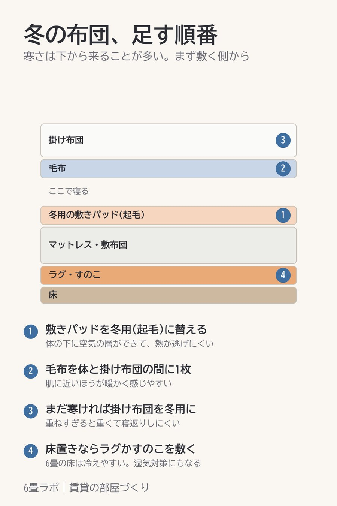

冬の布団が寒いとき、足すのは下から
この記事には楽天アフィリエイトのリンクが含まれています。

布団が寒いと掛け布団を厚くしたくなるんですが、寒さは下から来ていることが多いんです。
敷き布団やマットレスは、床の冷たさを直接受けています。なので、足していく順番は、まず敷きパッドを起毛の冬用に替えるところから。次に、掛け布団と体のあいだに毛布を1枚。それでも寒ければ、そこで初めて掛け布団を冬用にします。
下を先に暖かくしておくと、同じ掛け布団でも寒さの感じ方がかなり変わります。
6畳でベッドを置かず、床に布団を敷いて寝ている人は、床からの冷えがさらに強くなります。布団の下にラグを1枚敷いておくだけでも、冷たさはやわらぎます。
紹介した商品
- 【PR】冬用の敷きパッド。洗濯機で洗えて、シングルからある(楽天市場)
- 【PR】洗濯機で洗えて、シングルからある毛布(楽天市場)